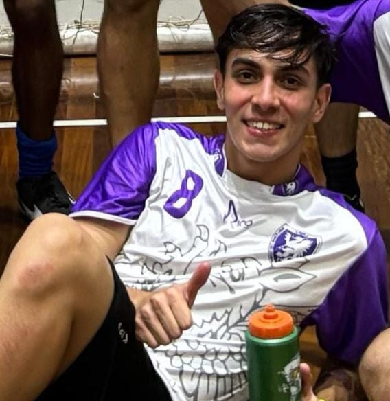
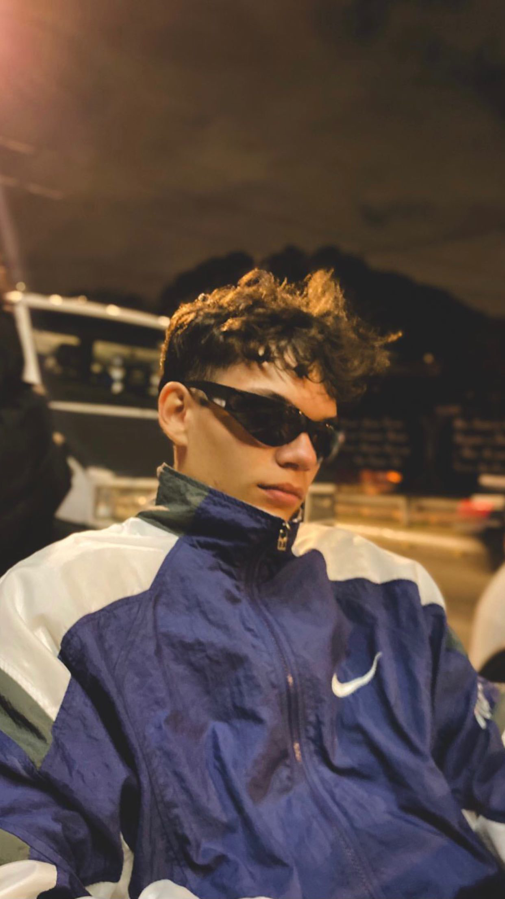
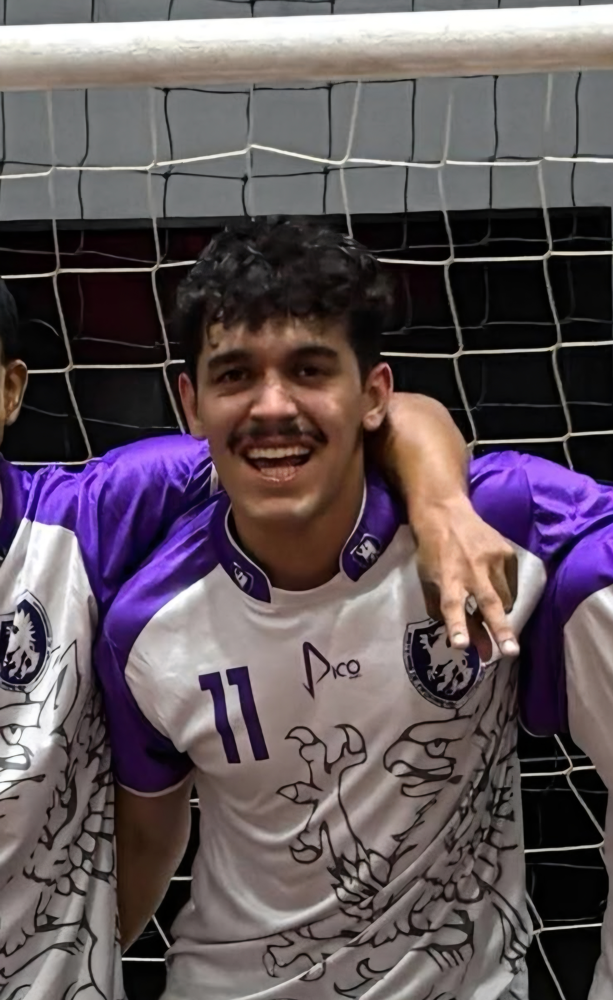
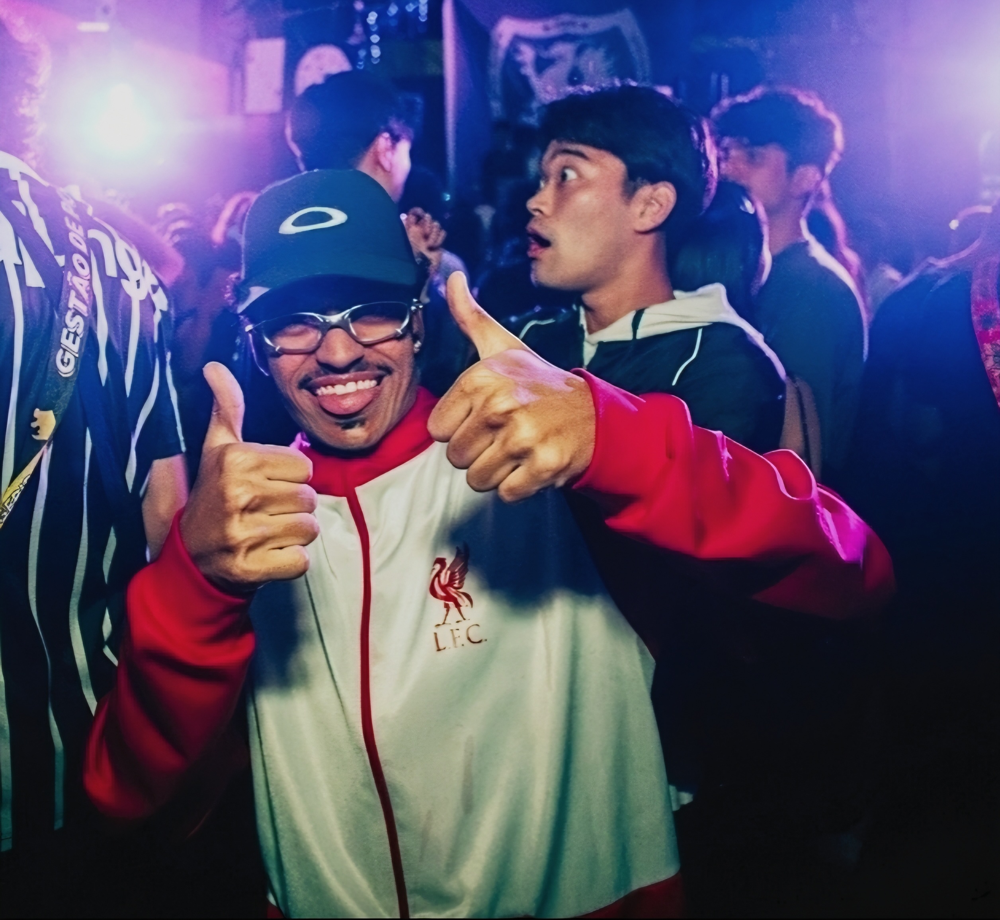
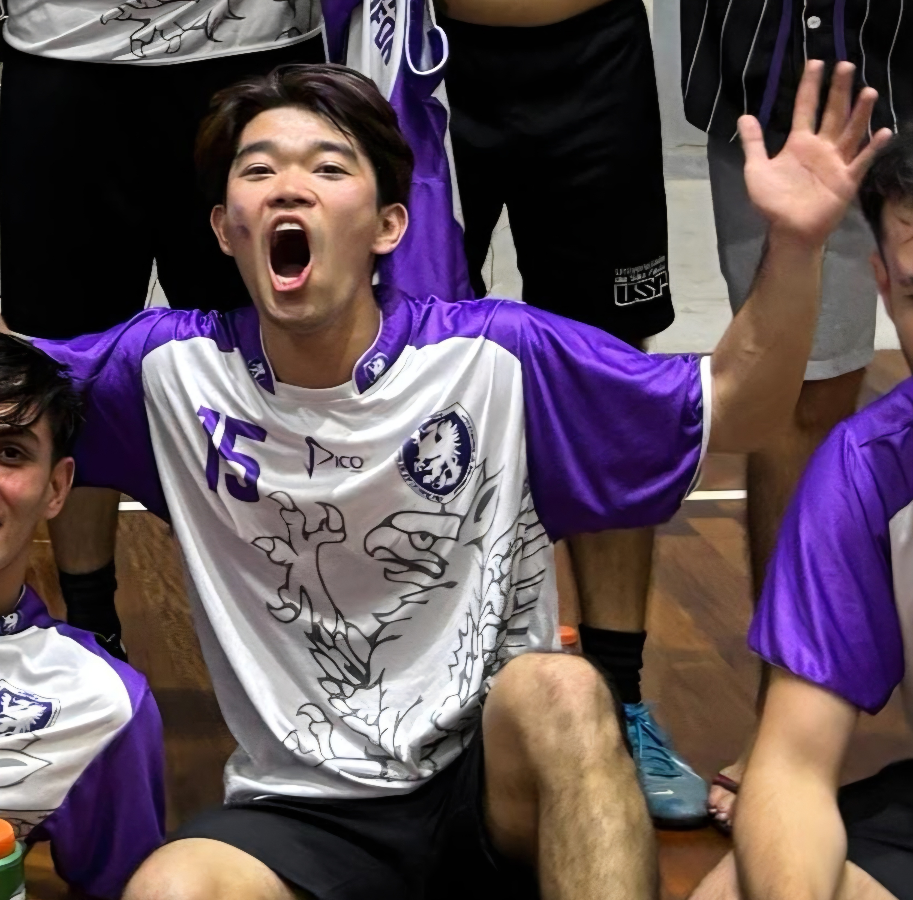

O caminho do calouro, mapeado por quem já passou por ele.
A Trilha USP reúne, em um único lugar, o que hoje está espalhado entre grupos de WhatsApp, drives pessoais e conversas de corredor: o que cada disciplina cobra, quais materiais funcionam, como as entidades do curso funcionam e onde estão as oportunidades.
O que é a Trilha USP
Uma plataforma de conhecimento colaborativo feita por alunos da EACH-USP para alunos da EACH-USP pensada para reduzir a dispersão de informação entre calouros e veteranos.
Todo começo de curso repete o mesmo problema: a informação existe, mas está espalhada. Está no grupo da turma, no drive de um veterano que já se formou, no story de alguém, na resposta que só aparece quando você já perdeu o prazo. Quem chega não sabe a quem perguntar, e quem já sabe, não tem onde registrar.
A Trilha USP existe para resolver isso. Reunimos, por disciplina, os conceitos que realmente são cobrados, o formato das avaliações, resumos, listas e vídeos produzidos por veteranos. Somamos a isso os módulos de cursos recomendados, vagas de estágio, projetos de IC e AEX, entidades, dicas, intercâmbio e possíveis carreiras.
Cada contribuição fica registrada, revisada pela própria comunidade e disponível para as próximas turmas ao invés de se perder quando o veterano se forma. É um projeto colaborativo: veteranos ajudam calouros a navegar o curso, e a comunidade ganha um acervo que melhora a cada semestre.
Feito por alunos
Todo o conteúdo é produzido por estudantes da EACH. Quem escreve sobre a disciplina, cursou a disciplina.
Acesso com @usp.br
Só quem tem e-mail institucional entra. Isso protege a credibilidade do conteúdo e mantém a comunidade segura.
Material verificado
Antes de ir ao ar, cada contribuição passa por checagem de qualidade, autoria e legalidade do arquivo.
Nove módulos, uma trilha só
Cada módulo resolve uma parte específica da vida acadêmica, da escolha da disciplina até o primeiro estágio.
Disciplinas
Dificuldade comunitária, conceitos cobrados, formato de avaliação e materiais de veteranos, disciplina por disciplina.
Abrir módulo →Cursos recomendados
Cursos externos de programação e matemática que fazem sentido começar logo no início da graduação.
Abrir módulo →Vagas de estágio
Repositório centralizado de vagas relevantes para quem já está com a graduação em andamento.
Abrir módulo →Projetos de IC
Divulgação centralizada de projetos de Iniciação Científica oferecidos por professores.
Abrir módulo →Projetos de AEX
Atividades extensionistas para completar horas complementares — e recompensar veteranos que contribuem.
Abrir módulo →Entidades
Centros acadêmicos, atléticas, empresas juniores e grupos de extensão: como funcionam e como participar.
Abrir módulo →Dicas
Como fazer requerimentos, como estudar de forma produtiva, como entrar em um projeto de IC e mais.
Abrir módulo →Intercâmbio
Informações sobre programas de intercâmbio e relatos de quem já passou pela experiência.
Abrir módulo →Possíveis carreiras
Trajetórias possíveis a partir de Sistemas de Informação e como se direcionar em cada uma delas.
Abrir módulo →Quem somos
Somos um grupo de estudantes de Sistemas de Informação da EACH-USP que decidiu transformar uma dor coletiva em projeto. O Trilha USP nasceu como trabalho da disciplina de Gestão de Projetos de TI e segue como iniciativa independente.

Bruno de Andrade Gama Kraker
NUSP 8101891
Pedro Henryk Bezerra Souza
NUSP 15553440
Rodrigo Franco de Moraes
NUSP 14606450
Rômulo Maurício Fonseca Júnior
NUSP 15553801
Thales Iamamura
NUSP 11915727Conheça o desenvolvimento do Trilha USP
Aqui estão reunidos os documentos produzidos pelo grupo ao longo da disciplina de Gestão de Projetos de TI — os mesmos artefatos que sustentaram as decisões do projeto.
Objetivos SMART e Canvas
Documento que apresenta os nossos objetivos SMART e o Business Model Canvas do projeto, com a proposta de valor, público-alvo e frentes de atuação.
Escopo completo do projeto
Visão geral, os nove módulos, decisões estratégicas de legitimidade, autenticação, LGPD, governança e sustentabilidade do Trilha USP.
Termo de Abertura de Projeto (TAP)
Documento que formaliza o início do projeto, detalhando sua justificativa, escopo do MVP, cronograma, equipe, custos e riscos.
Diagrama de Gantt
Cronograma visual das atividades do projeto, organizado em 7 estágios de desenvolvimento com suas respectivas datas e entregas.
Tem um resumo que salvou o seu semestre?
Compartilhe com quem está chegando agora. Todo material passa por revisão antes de ser publicado.